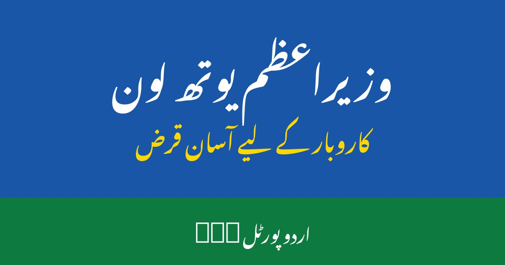

وزیراعظم یوتھ بزنس لون 2026: اہلیت اور اپلائی کا طریقہ

پاکستان میں لاکھوں نوجوان اپنا کاروبار شروع کرنا چاہتے ہیں، لیکن سب سے بڑی رکاوٹ سرمائے کی کمی ہوتی ہے۔ بینک نئے کاروبار کو قرض دینے سے گھبراتے ہیں، کیونکہ ان کے پاس نہ ضمانت ہوتی ہے اور نہ کاروباری ریکارڈ۔ اسی مسئلے کے حل کے لیے حکومتِ پاکستان نے وزیراعظم یوتھ بزنس و زراعت لون اسکیم شروع کی ہے، جس کے تحت نوجوانوں کو آسان شرائط پر کاروباری قرض دیا جاتا ہے۔ اس مضمون میں اسکیم کی اہلیت، قرض کی اقسام، مارک اپ، دستاویزات اور آن لائن اپلائی کا مکمل طریقہ آسان اردو میں بیان کیا گیا ہے۔
1۔ یوتھ بزنس لون اسکیم کیا ہے؟
یہ اسکیم حکومتِ پاکستان کے یوتھ پروگرام کا حصہ ہے، جس کا مقصد نوجوانوں کو نوکری تلاش کرنے والے کی بجائے روزگار پیدا کرنے والا بنانا ہے۔ اس کے تحت اہل نوجوانوں کو چھوٹے اور درمیانے کاروبار کے لیے بینکوں کے ذریعے قرض دیا جاتا ہے — چھوٹی دکان، آن لائن کاروبار، زراعت یا سروسز، کوئی بھی جائز کاروبار ہو سکتا ہے۔ اسکیم کی خاص بات یہ ہے کہ چھوٹے قرضوں پر مارک اپ بہت کم یا صفر ہوتا ہے، اور واپسی کی مدت بھی عام بینک قرضوں سے زیادہ آسان رکھی گئی ہے، تاکہ نیا کاروبار چلنے کے بعد قسطیں ادا کرنا ممکن ہو۔
2۔ کون درخواست دے سکتا ہے؟ اہلیت کی شرائط
اسکیم کے لیے بنیادی اہلیت کی شرائط یہ ہیں:
- پاکستانی شہری ہو اور درست کمپیوٹرائزڈ قومی شناختی کارڈ رکھتا ہو
- عمر عام طور پر 21 سے 45 سال کے درمیان ہو
- کوئی کاروباری منصوبہ ہو، نیا کاروبار یا موجودہ کاروبار کی توسیع
- ایک شخص ایک وقت میں صرف ایک قرض کی درخواست دے سکتا ہے
- سرکاری ملازمین عام طور پر اس اسکیم کے اہل نہیں ہوتے
- زراعت کے قرض کے لیے متعلقہ زمین یا زرعی سرگرمی کا ثبوت درکار ہو سکتا ہے
اہلیت کی شرائط وقتاً فوقتاً تبدیل ہو سکتی ہیں، اس لیے درخواست سے پہلے سرکاری پورٹل پر تازہ شرائط ضرور پڑھ لیں۔ نامکمل درخواست اکثر ابتدائی مرحلے میں ہی مسترد ہو جاتی ہے، اس لیے پہلے اپنی دستاویزات مکمل کریں۔
3۔ قرض کی اقسام — تین درجے
اسکیم کے تحت قرض کو عام طور پر تین درجوں میں تقسیم کیا جاتا ہے، تاکہ چھوٹے دکاندار سے لے کر درمیانے کاروبار تک سب مستفید ہو سکیں:
- پہلا درجہ: پانچ لاکھ روپے تک — چھوٹی دکان، آن لائن کاروبار یا گھریلو صنعت کے لیے
- دوسرا درجہ: پانچ سے پندرہ لاکھ روپے تک — ورکشاپ یا سروس سینٹر کے لیے
- تیسرا درجہ: پندرہ سے پچھتر لاکھ روپے تک — بڑے اور زرعی منصوبوں کے لیے
ہر درجے پر مارک اپ کی شرح مختلف ہوتی ہے — چھوٹے درجے پر سب سے کم۔ قرض کی حتمی منظوری بینک کرتا ہے، جو آپ کے منصوبے، آمدن کے امکانات اور واپسی کی صلاحیت کو دیکھتا ہے۔ اس لیے منصوبہ صاف اور حقیقت پسندانہ لکھیں، مبالغہ آرائی سے گریز کریں۔
4۔ مارک اپ اور واپسی کی مدت
قرض کی سب سے اہم بات اس کی واپسی ہے۔ پہلے درجے کے چھوٹے قرضوں پر مارک اپ اکثر نہ ہونے کے برابر ہوتا ہے، جبکہ بڑے درجوں پر سبسڈی کے بعد بھی کچھ مارک اپ ادا کرنا پڑتا ہے۔ واپسی کی مدت عام طور پر کئی سال تک ہوتی ہے، اور بعض صورتوں میں شروع میں رعایتی قسط کی سہولت بھی مل سکتی ہے، تاکہ کاروبار جمنے کا وقت مل جائے۔ درخواست سے پہلے بینک سے ماہانہ قسط کا تخمینہ ضرور پوچھیں اور یقینی بنائیں کہ آپ کا کاروبار اسے برداشت کر سکے گا — قرض واپس نہ کرنے پر بینک ریکارڈ خراب ہو جاتا ہے، جو مستقبل کے قرضوں میں رکاوٹ بنے گا۔
5۔ درخواست کے لیے درکار دستاویزات
درخواست دینے سے پہلے یہ دستاویزات تیار رکھیں، تاکہ فارم بھرتے وقت رکاوٹ نہ آئے:
- درست قومی شناختی کارڈ کی کاپی
- حالیہ پاسپورٹ سائز تصویر
- تعلیمی اسناد، اگر کاروبار سے متعلق ہوں
- کاروباری منصوبے کی مختصر تفصیل — کیا بیچیں گے، لاگت اور متوقع آمدن
- کاروبار کی جگہ کا ثبوت، جیسے کرایہ نامہ، اگر دستیاب ہو
- بینک اسٹیٹمنٹ، اگر پہلے سے کوئی اکاؤنٹ ہو
- زرعی قرض کے لیے زمین کے کاغذات یا زرعی سرگرمی کا ثبوت
تمام دستاویزات کی واضح اسکین کاپیاں تیار رکھیں — دھندلی تصویر سے درخواست تاخیر کا شکار ہو سکتی ہے، اس لیے اپ لوڈ سے پہلے ہر فائل خود چیک کریں۔
6۔ آن لائن اپلائی کرنے کا طریقہ — قدم بہ قدم
درخواست کا طریقہ مکمل طور پر آن لائن ہے اور اس کے لیے کسی ایجنٹ کی ضرورت نہیں:
- سرکاری یوتھ پروگرام پورٹل کھولیں اور یوتھ بزنس لون کے سیکشن میں جائیں
- موبائل نمبر اور شناختی کارڈ نمبر سے اکاؤنٹ بنائیں یا لاگ ان کریں
- فارم میں ذاتی معلومات، تعلیم، کاروبار کی نوعیت اور مطلوبہ رقم درست درج کریں
- کاروباری منصوبہ سادہ الفاظ میں لکھیں — کاروبار کیا ہے، کہاں ہوگا، پیسہ کہاں خرچ ہوگا
- اپنی پسند کا بینک منتخب کریں، ترجیحاً وہ جس میں آپ کا اکاؤنٹ پہلے سے ہو
- دستاویزات اپ لوڈ کریں اور جمع کرنے سے پہلے تمام معلومات دوبارہ پڑھ لیں
- جمع کرنے کے بعد ملنے والا ٹریکنگ نمبر محفوظ کر لیں
فارم جمع ہونے کے بعد بینک درخواست کی جانچ کرتا ہے، بعض صورتوں میں انٹرویو یا کاروبار کی جگہ کا دورہ بھی ہو سکتا ہے۔ منظوری پر رقم آپ کے اکاؤنٹ میں جاری کی جاتی ہے۔ اس عمل میں کئی ہفتے لگ سکتے ہیں، اس لیے پورٹل پر درخواست کی حالت وقتاً فوقتاً چیک کرتے رہیں۔
7۔ کن کاروباروں کے لیے یہ قرض موزوں ہے؟
یہ اسکیم تقریباً ہر جائز کاروبار کے لیے کھلی ہے، خاص طور پر: چھوٹی دکان، آن لائن اسٹور، بیوٹی سیلون یا ٹیلرنگ، موبائل مرمت، زراعت و پولٹری، بیکری یا ریسٹورنٹ، اور ٹیکنالوجی کے چھوٹے منصوبے۔ انتخاب اپنی مہارت اور علاقے کی مانگ دیکھ کر کریں۔
8۔ درخواست مسترد ہونے کی عام وجوہات
بہت سی درخواستیں قابلِ بچاؤ وجوہات سے مسترد ہوتی ہیں: غلط یا نامکمل معلومات، غیر حقیقی کاروباری منصوبہ، درست نہ ہونے والی دستاویزات، پہلے سے نادہندہ ہونا، یا قرض کی رقم کا کاروبار سے مطابقت نہ رکھنا۔ مسترد ہونے پر وجہ معلوم کریں، اسے درست کریں اور دوبارہ درخواست دیں — اکثر دوسری کوشش میں منظوری مل جاتی ہے۔
یوتھ بزنس لون اپنا کاروبار شروع کرنے کا ایک حقیقی موقع ہے، بشرطیکہ درخواست درست معلومات اور واضح منصوبے کے ساتھ دی جائے۔ اہلیت چیک کریں، دستاویزات تیار کریں، سرکاری پورٹل سے خود اپلائی کریں اور کسی ایجنٹ کو پیسے نہ دیں۔ آج ہی اپنا کاروباری منصوبہ لکھنا شروع کریں۔